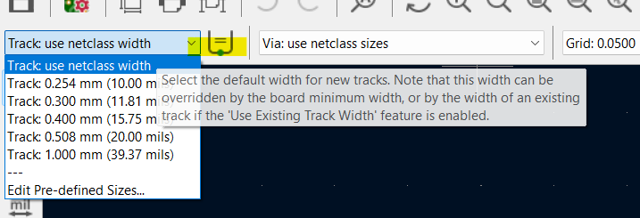
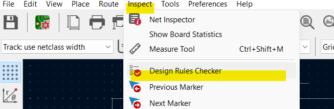
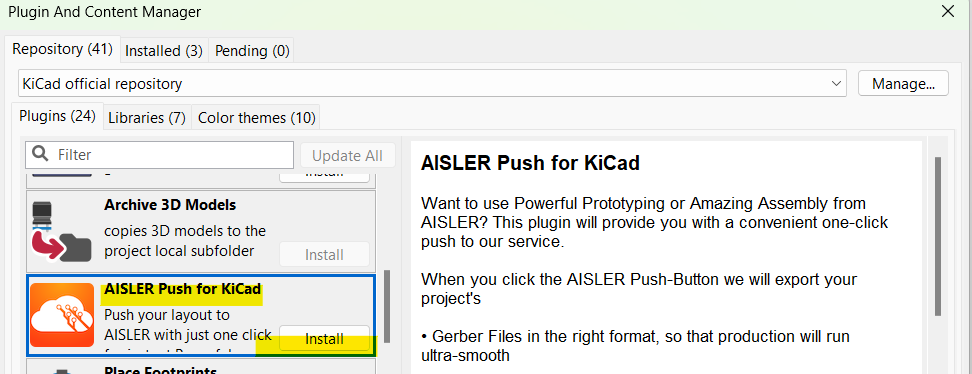

This project template sets you up with presets to jumpstart your endeavors into electronics and PCB design.
The DRC, trace and via settings are specifically tailored for AISLERs PCB offerings.
In the PCB editor you can switch between the preset trace and via sizes using the corresponding drop-down menus.
This allows you to choose the optimal via and tracks size for your need.
When routing from an existing track Kicad will use its track size instead of the current one you selected,
You can disable this by clicking the button in between drop-down menus.
Trace width selection

Via selection menu

If you want to route a power rail to supply your components its a good idea to choose a larger trace to keep the voltage drop low
When routing signal traces choose a smaller trace width, to save space.
You can read more about getting started with the basics of PCB Layout in the AISLER Community
After you finished routing your PCB it is important to run a design rule check (DRC),
this way you can catch mistakes you have made before you proceed to order the PCB.
You find the DRC under Inspect -> Design Rules Checker .
Design Rules Checker

Push to AISLER
Ordering PCBs can be diffcult but the Push to AISLER plugin for KiCad enables you to upload your design with just a buttonpress.
Select the Plugin and Content Manager on KiCads main page.

Scroll down to AISLER Push for KiCad, select Install the Apply Changes.

After restarting KiCad you can head to the PCB editor and will find a button on the right sight of the layer selection drop-down menu.
When you click this button your project files will be exported in the right format and uloaded to AISLER.
Once the upload is completed you can place your order in less than a minute.
If you made changes to your PCB and press the button again, a new revision is uploaded.
(c)2023 AISLER B.V.